1. Near-white grey canvas
8aad62cd7The old page was a sky-tinted brand blue (#E6F4FE). Swapped to iOS-style near-white grey (#f2f3f7) across every canvas source so the white popups stand out against the page instead of blending into it. Shown here as the current Notebook home, grey page with the trio on the action cards.
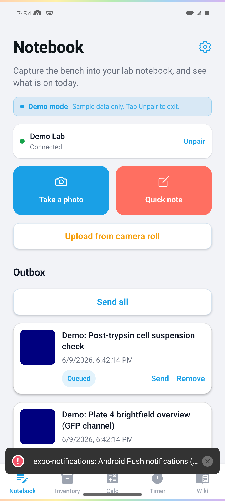
2. White sheets pop off the grey
183432007Inverse-sheet pattern. The notebook chooser sheet went from grey (same hue as the page, leaning on the scrim to separate) to a pure-white sheet with grey-inset card groups, so the modal pops harder off the grey page. Recommended rows are sky-tinted.
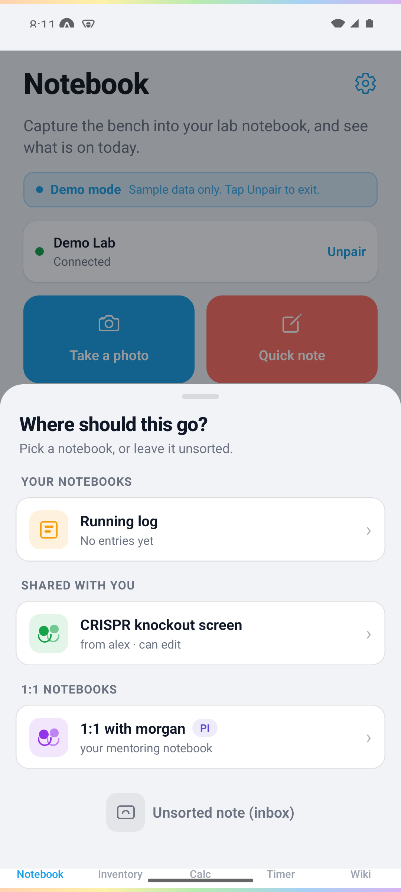
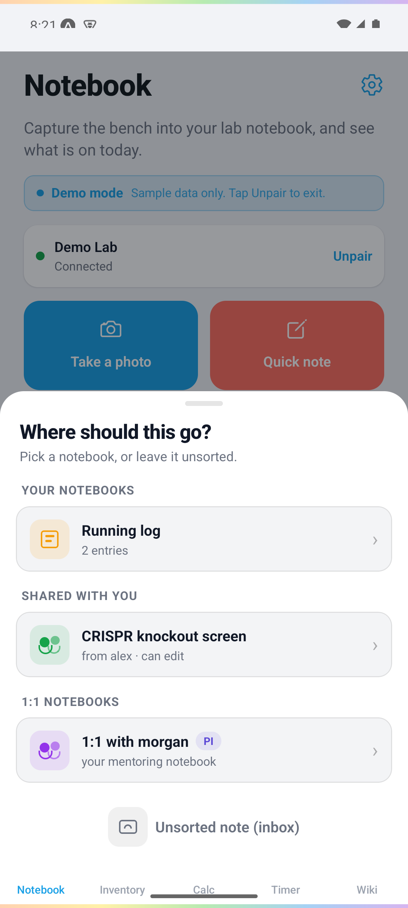
3. BeakerBot warms the pairing screen
9620e2472The pre-pairing screen was cold and mascot-less. Added a living BeakerBot above the title to match the approved Connect frame, so the first screen a new user sees is friendly and on-brand. The global rainbow bar caps the top.
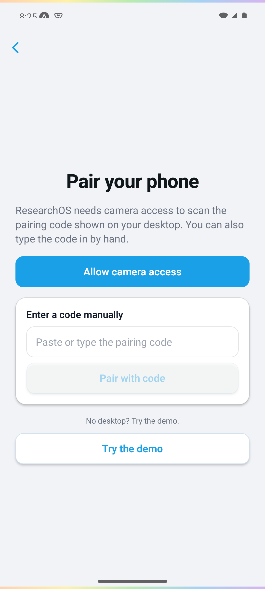
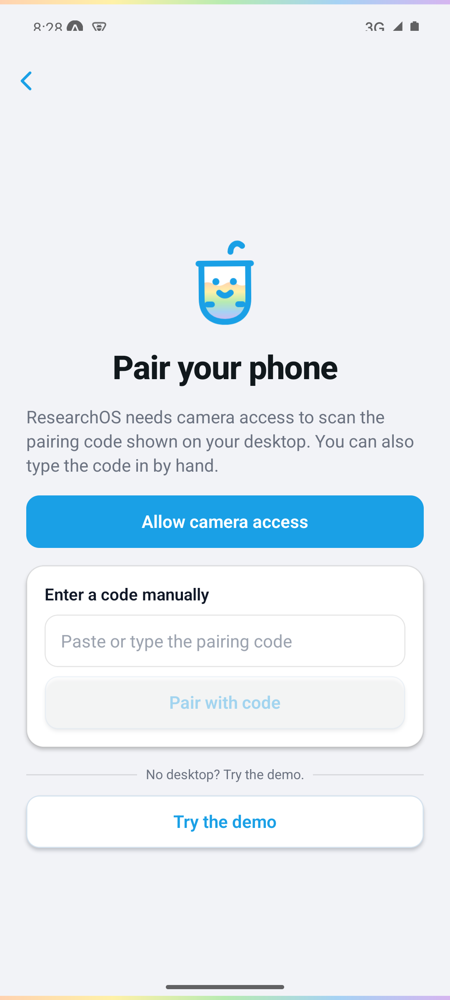
4. Running-timer trio accent
9be548b6eThe running countdown was all-blue, the one genuine trio gap found in the pass. Now an amber countdown with a coral Cancel, while idle presets stay blue. The Timer screen below shows the trio in its resting state.
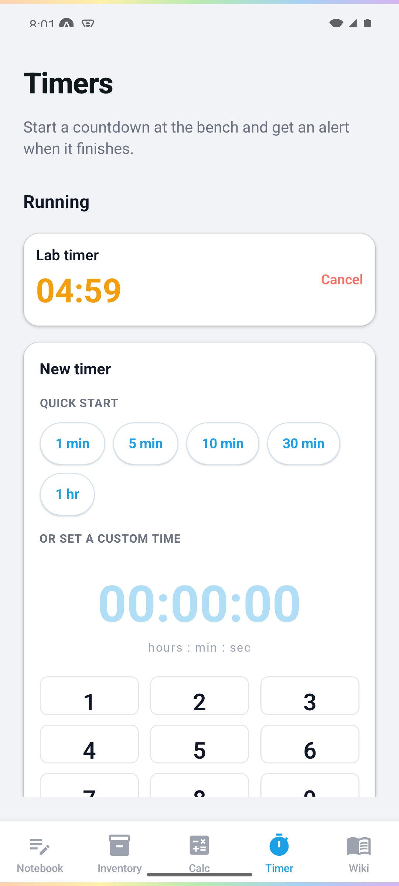
Verified clean, no change needed
These screens were already correctly designed in the pass. Captured to confirm the trio reads well and the grey canvas renders without a blue flash. No fabricated changes.
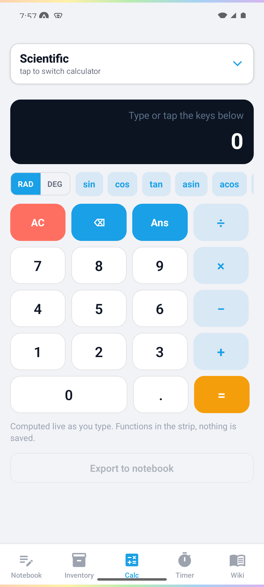
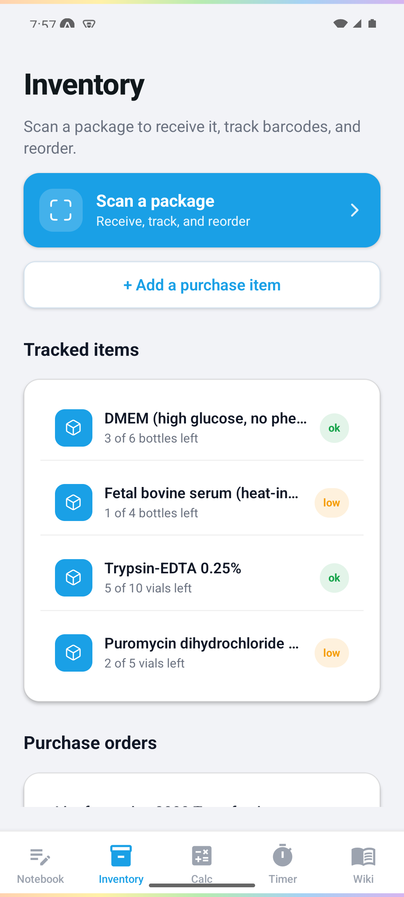
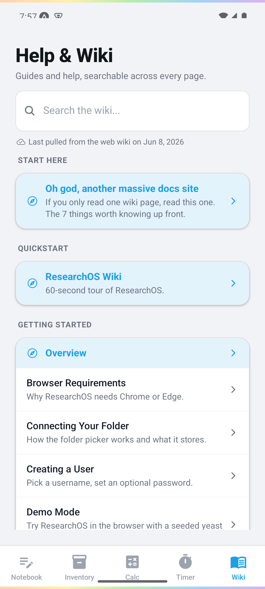
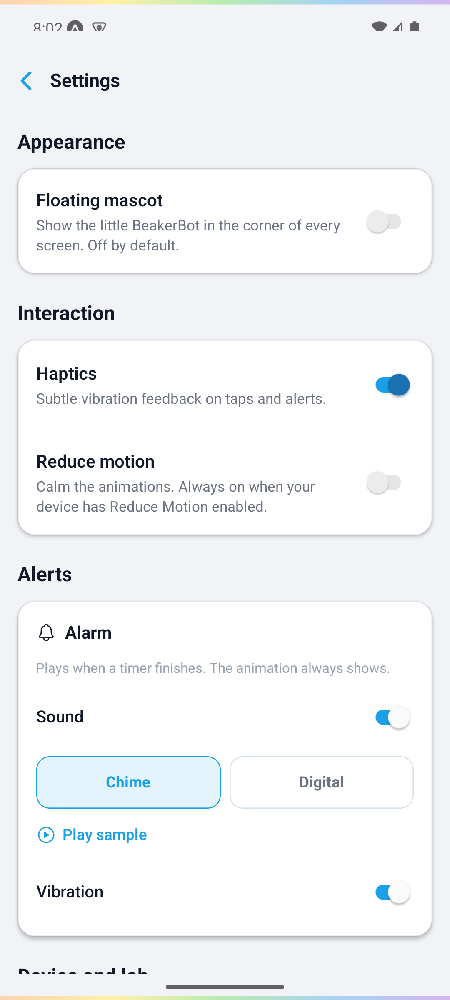
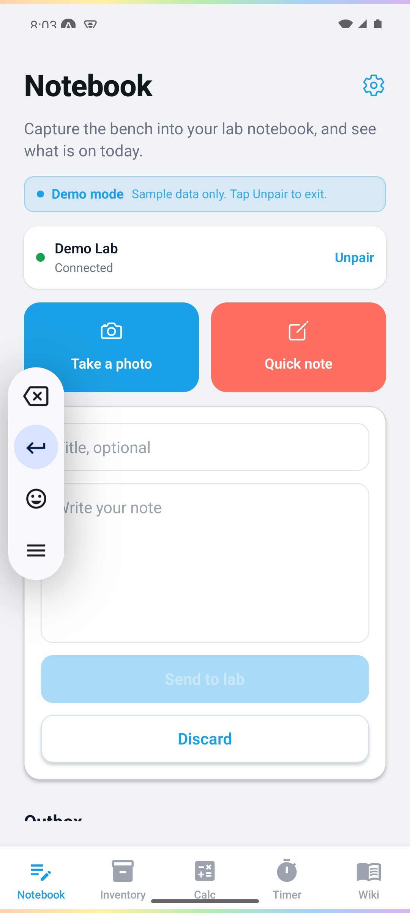
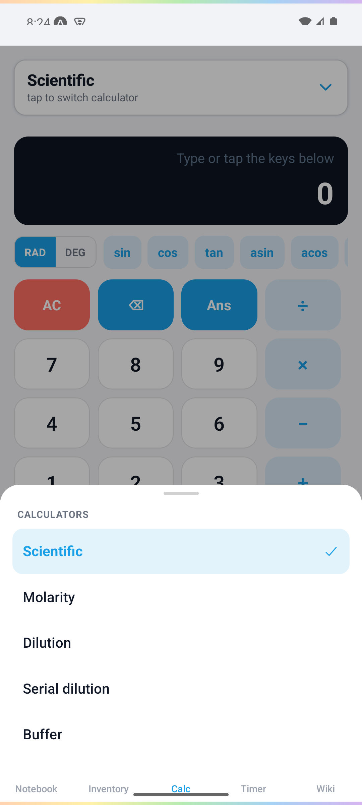
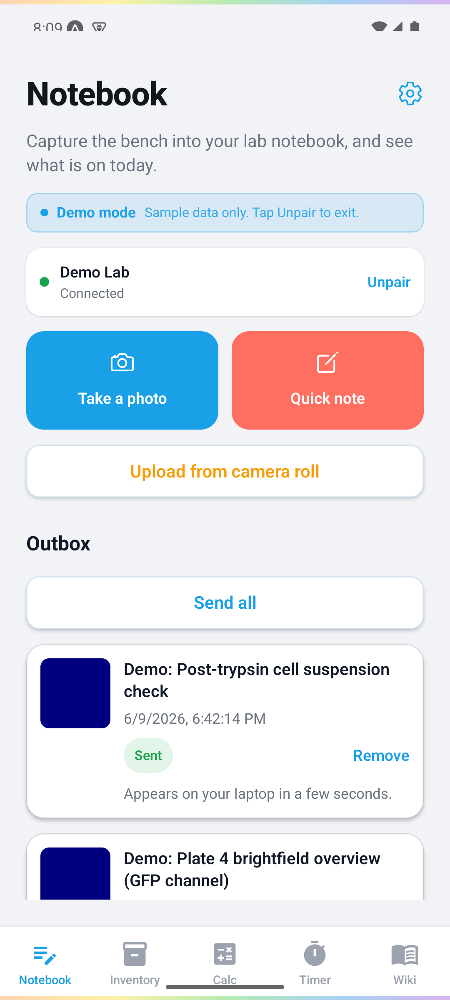